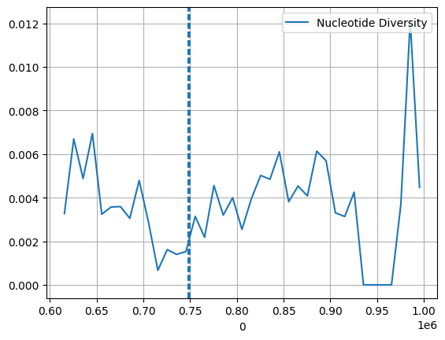
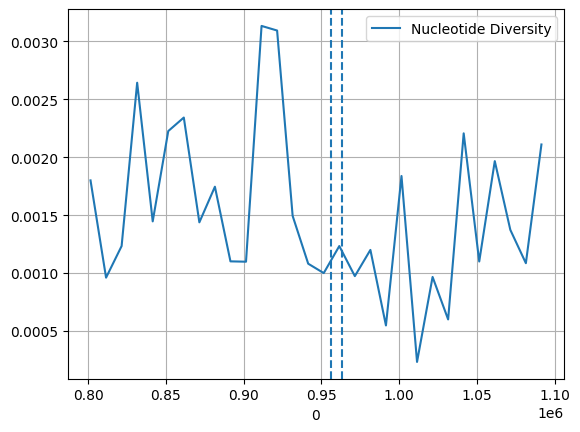

import pandas as pd
import numpy as np
import allel
import numpy as np
import matplotlib.pyplot as plt
import seaborn as sns1. Session (shortened)
DHFR gene
Loading and filtering the metadata file
samples_path = "/home/kevinkorfmann/Projects/malaria/data/Pf7_samples.txt"
samples_metadata = pd.read_csv(samples_path, sep="\t")
african_subset = ['Kenya', 'Ethiopia', 'Tanzania'] # 'Ethiopia', 'Tanzania', 'Uganda'
# form sample table above create mask to filter the table to only contain rows of interest
samples_metadata_mask = [True if criteria in african_subset else False for criteria in samples_metadata.Country]
samples_metadata = samples_metadata[samples_metadata_mask]
# quality control filtering
#samples_metadata = samples_metadata[samples_metadata["QC pass"]]
# we only look at genomic DNA (gDNA) for now
#samples_metadata_mask = [True if criteria in ["gDNA"] else False for criteria in samples_metadata["Sample type"]]
#samples_metadata = samples_metadata[samples_metadata_mask]
# reseting tables indices
#samples_metadata = samples_metadata.reset_index(drop=True)np.unique(samples_metadata.Country.tolist())array(['Bangladesh', 'Benin', 'Burkina Faso', 'Cambodia', 'Cameroon',
'Colombia', "Côte d'Ivoire", 'Democratic Republic of the Congo',
'Ethiopia', 'Gabon', 'Gambia', 'Ghana', 'Guinea', 'India',
'Indonesia', 'Kenya', 'Laos', 'Madagascar', 'Malawi', 'Mali',
'Mauritania', 'Mozambique', 'Myanmar', 'Nigeria',
'Papua New Guinea', 'Peru', 'Senegal', 'Sudan', 'Tanzania',
'Thailand', 'Uganda', 'Venezuela', 'Vietnam', 'nan'], dtype='<U32')Loading the VCF file
vcf_file = str("../../datasets/malaria-chromosomes/DHFR-TS_surrounding_region.vcf.gz")
callset = allel.read_vcf(vcf_file, fields=['samples', 'calldata/GT', 'variants/ALT', 'variants/CHROM',
'variants/FILTER_PASS', 'variants/ID', 'variants/POS',
'variants/QUAL', 'variants/REF','calldata/GT','calldata/PS'])
gt = allel.GenotypeArray(callset['calldata/GT'])
phase_sets = callset['calldata/PS']
pos = callset["variants/POS"]Filtering the Genotypes
def get_genotypes(samples, genotypes):
mask = [True if sample in samples else False for sample in callset["samples"]]
genotypes = genotypes[:,mask]
gt_np = np.array(genotypes.to_haplotypes())
return gt_np
samples_id = samples_metadata.Sample.tolist()
gt_samples = get_genotypes(samples_id, gt)gt_samplesarray([[ 0, 0, 0, ..., 0, 0, 0],
[ 1, 1, 1, ..., 1, 0, 1],
[ 0, 0, 0, ..., 0, 0, 0],
...,
[-1, -1, 0, ..., 1, 0, 1],
[ 0, 0, 0, ..., 0, 0, 0],
[ 0, 0, 0, ..., 0, 0, 0]], dtype=int8)Calculating the statistic and plotting
ac = gt_samples
pi, windows, n_bases_sen, counts_sen = allel.windowed_diversity(pos=pos, ac=ac, size=10_000, start=pos[0])
window_start = pd.DataFrame(windows)[0]
sns.lineplot(x=window_start, y=pi, label="Nucleotide Diversity")
plt.axvline(747897, ls='--')
plt.axvline(750065, ls='--')
plt.grid(True)/opt/miniconda3/envs/workshop-kenya/lib/python3.10/site-packages/allel/stats/diversity.py:99: RuntimeWarning: divide by zero encountered in divide
mpd = np.where(n_pairs > 0, n_diff / n_pairs, fill)
MDR 1 gene
import pandas as pd
import numpy as np
import allel
import numpy as np
import matplotlib.pyplot as plt
import seaborn as snsLoading and filtering the metadata file
samples_path = "/home/kevinkorfmann/Projects/malaria/data/Pf7_samples.txt"
samples_metadata = pd.read_csv(samples_path, sep="\t")
african_subset = ['Kenya'] # 'Ethiopia', 'Tanzania', 'Uganda'
# form sample table above create mask to filter the table to only contain rows of interest
samples_metadata_mask = [True if criteria in african_subset else False for criteria in samples_metadata.Country]
samples_metadata = samples_metadata[samples_metadata_mask]
# quality control filtering
samples_metadata = samples_metadata[samples_metadata["QC pass"]]
# we only look at genomic DNA (gDNA) for now
samples_metadata_mask = [True if criteria in ["gDNA"] else False for criteria in samples_metadata["Sample type"]]
samples_metadata = samples_metadata[samples_metadata_mask]
# reseting tables indices
samples_metadata = samples_metadata.reset_index(drop=True)Loading the VCF file
vcf_file = str("../../datasets/malaria-chromosomes/MDR1_surrounding_region.vcf.gz")
callset = allel.read_vcf(vcf_file, fields=['samples', 'calldata/GT', 'variants/ALT', 'variants/CHROM',
'variants/FILTER_PASS', 'variants/ID', 'variants/POS',
'variants/QUAL', 'variants/REF','calldata/GT','calldata/PS'])
gt = allel.GenotypeArray(callset['calldata/GT'])
phase_sets = callset['calldata/PS']
pos = callset["variants/POS"]Filtering the Genotypes
def get_genotypes(samples, genotypes):
mask = [True if sample in samples else False for sample in callset["samples"]]
genotypes = genotypes[:,mask]
gt_np = np.array(genotypes.to_haplotypes())
return gt_np
samples_id = samples_metadata.Sample.tolist()
gt_samples = get_genotypes(samples_id, gt)Calculating the statistic and plotting
ac = gt_samples
pi, windows, n_bases_sen, counts_sen = allel.windowed_diversity(pos=pos, ac=ac, size=10_000, start=pos[0])
window_start = pd.DataFrame(windows)[0]
sns.lineplot(x=window_start, y=pi, label="Nucleotide Diversity")
plt.axvline(955955, ls='--')
plt.axvline(963095, ls='--')
plt.grid(True)/opt/miniconda3/envs/workshop-kenya/lib/python3.10/site-packages/allel/stats/diversity.py:99: RuntimeWarning: divide by zero encountered in divide
mpd = np.where(n_pairs > 0, n_diff / n_pairs, fill)